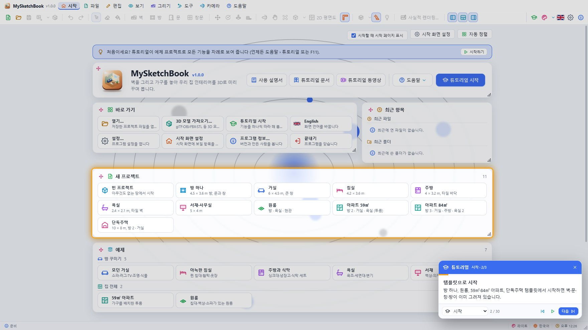
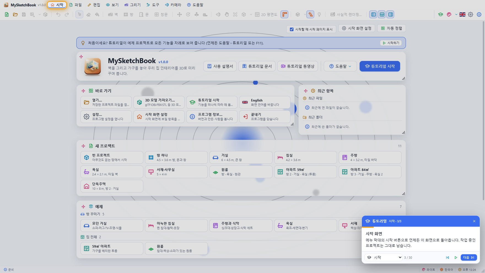
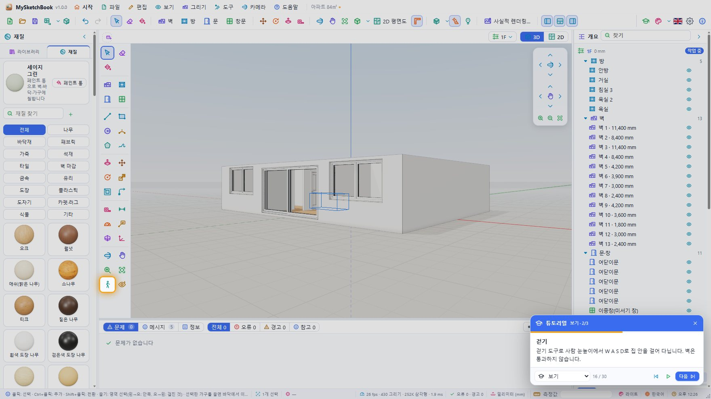
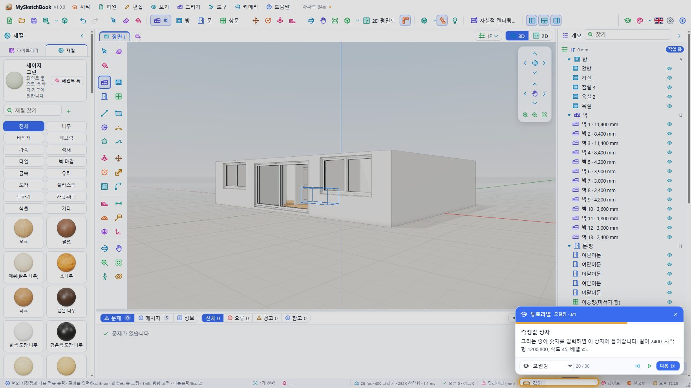
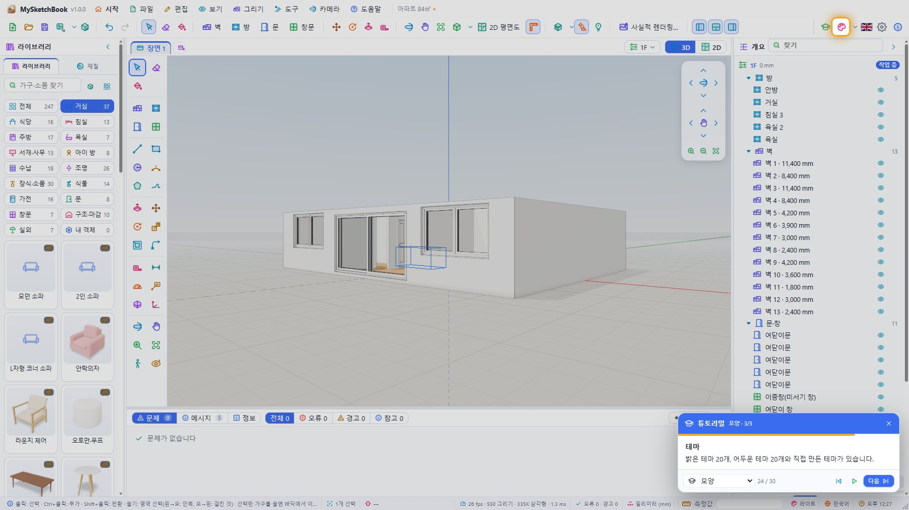
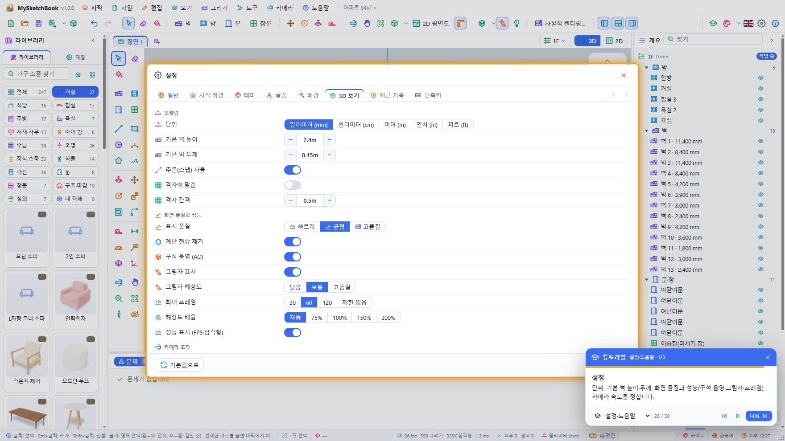
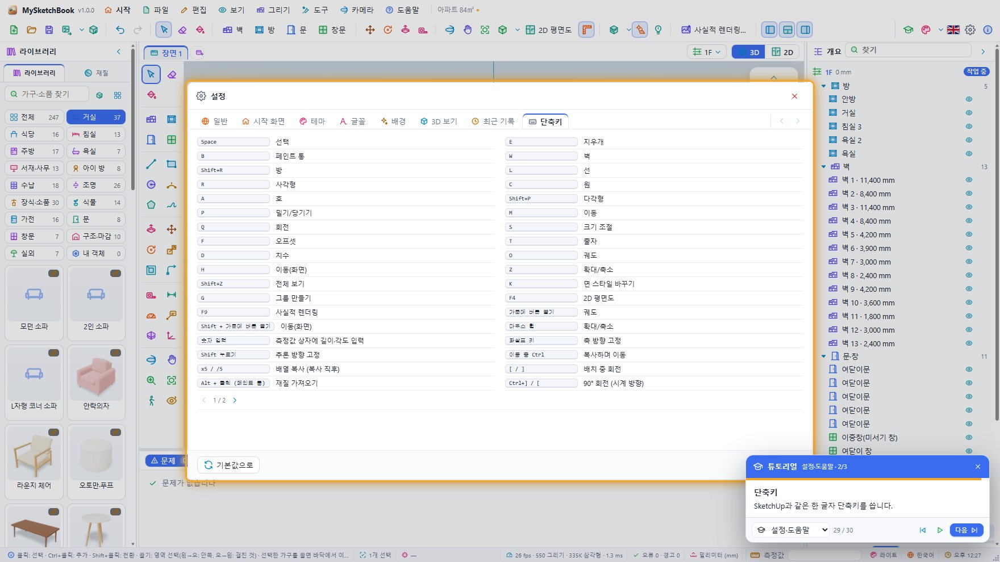
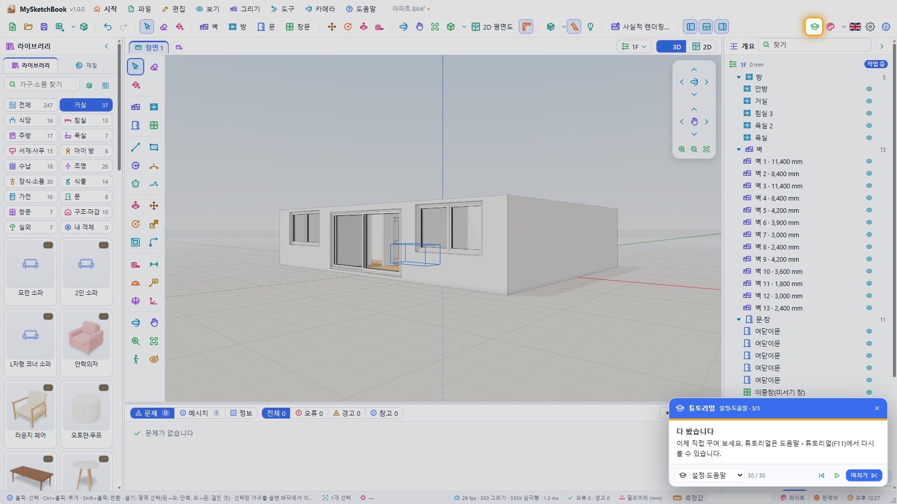

MySketchBook 튜토리얼
앱 안의 튜토리얼과 같은 내용을 장과 단계별로 정리했습니다. 튜토리얼은 8개 장, 30단계로 되어 있고, 실제 프로그램을 움직이며 각 기능을 보여 줍니다. 그림은 웹 버전에서 튜토리얼을 실행하며 찍은 화면입니다 (npm run tutorial:docs 로 다시 찍습니다).
튜토리얼 실행하기
- 시작 페이지 › 튜토리얼 시작, 툴바 오른쪽의 튜토리얼 버튼, 도움말 › 튜토리얼 또는 F11.
- 오른쪽 아래 카드에서 다음 / 이전 단계로 한 단계씩, 자동 재생으로 끝까지 봅니다. 장 목록으로 원하는 장에 바로 가고, ✕ 또는 Esc로 언제든 끝냅니다. 카드는 머리글을 끌어 옮길 수 있습니다.
- 튜토리얼은 자기 프로젝트(84㎡ 아파트 템플릿)에서만 작업합니다. 열어 둔 프로젝트는 끝날 때 그대로 돌아오고, 바뀐 설정(테마·언어·패널 등)도 원래대로 돌려 놓습니다.
- 튜토리얼이 도는 동안에는 팝업(메뉴·설정·렌더링 창)이 별도의 창 대신 주 창 안에 열립니다.
- 모든 기능의 자세한 설명은 사용 설명서에 있습니다.
차례
1. 시작
1. MySketchBook에 오신 것을 환영합니다
벽을 그리고 가구를 놓아 집 안 인테리어를 3D로 꾸미는 프로그램입니다. 다음을 누르면 기능을 차례로 보여 드립니다.

2. 템플릿으로 시작
방 하나, 원룸, 59㎡·84㎡ 아파트, 단독주택 템플릿에서 시작하면 벽·문·창·방이 이미 그려져 있습니다.

3. 시작 화면
메뉴 막대의 시작 버튼으로 언제든 이 화면으로 돌아옵니다. 작업 중인 프로젝트는 그대로 남습니다.

2. 집 짓기
4. 작업 화면
왼쪽은 라이브러리와 재질, 가운데는 3D 화면, 오른쪽은 개요(층·방·벽·가구 목록)와 속성입니다.

5. 도구 모음
SketchUp처럼 선택·건축·그리기·수정·측정·카메라 도구가 모여 있습니다. 키보드 한 글자로도 고를 수 있습니다 (W 벽, R 사각형, P 밀기/당기기 …).

6. 벽 그리기
벽 도구로 점을 차례로 클릭합니다. 끝점·중점·축 방향에 자동으로 맞춰지고, 길이를 입력하고 Enter를 누르면 정확한 길이가 됩니다.

7. 방 만들기
방 도구로 벽에 둘러싸인 곳을 클릭하면 바닥이 생기고 면적(㎡·평)이 계산됩니다.

8. 문과 창
라이브러리의 문·창을 고르고 벽 위를 클릭하면 벽에 구멍이 뚫리며 들어갑니다. 크기는 속성에서 바꿉니다.

9. 2D 평면도
2D 버튼(F4)을 누르면 1.2 m 높이에서 자른 평면도가 됩니다. 그대로 그리고 배치할 수 있습니다.

3. 가구 배치
10. 가구 라이브러리
거실·침실·주방·욕실·조명·식물 등 240여 개의 고품질 가구와 소품이 있습니다. HQ 표시는 실측 사진 모델입니다.

11. 배치하기
카드를 클릭하고 바닥을 클릭하거나 화면으로 끌어다 놓습니다. 벽 가까이 놓으면 등을 벽에 붙입니다. [ ] 로 회전합니다.

12. 속성
선택한 가구의 위치·회전·크기와 폭·좌석 수·천 같은 치수와 옵션을 바꿉니다.

13. 재질
나무·패브릭·가죽·석재·타일·벽지 등 100여 가지 실사 재질입니다. 하나를 고르면 페인트 통이 켜집니다.

14. 페인트 통
벽 한쪽 면, 바닥, 가구의 한 부분을 클릭해 칠합니다. Alt+클릭은 재질을 가져옵니다.

4. 보기
15. 화면 돌려 보기
가운데 버튼 끌기는 궤도, Shift+가운데 버튼은 이동, 휠은 커서 쪽으로 확대합니다. 표준 보기 버튼도 있습니다.

16. 걷기
걷기 도구로 사람 눈높이에서 W A S D로 집 안을 걸어 다닙니다. 벽은 통과하지 않습니다.

17. 장면
마음에 드는 시점을 장면으로 저장하면 탭을 눌러 언제든 돌아옵니다.

5. 모델링
18. SketchUp식 모델링
선·사각형·원으로 닫힌 도형을 그리면 면이 생깁니다. 선이 면을 가로지르면 면이 나뉩니다.

19. 밀기/당기기
면을 클릭해 끌면 입체가 됩니다. 높이를 입력하고 Enter. 반대 면까지 밀면 구멍이 뚫립니다.

20. 측정값 상자
그리는 중에 숫자를 입력하면 이 상자에 들어갑니다: 길이 2400, 사각형 1200,800, 각도 45, 배열 x5.

21. 내 3D 모델
glTF·OBJ·FBX·STL·DAE·3DS·PLY 모델을 가져오면 라이브러리 › 내 객체에 들어가고 프로젝트 파일에 함께 저장됩니다.

6. 모양
22. 면 스타일
질감·색만·흰색 모형·X선·선만·숨은선 제거로 바꿔 봅니다. K 키로 차례로 바뀝니다.

23. 햇빛과 그림자
날짜·시각·도시를 정하면 실제 햇빛 방향으로 그림자가 집니다.

24. 테마
밝은 테마 20개, 어두운 테마 20개와 직접 만든 테마가 있습니다.

7. 저장·내보내기
25. 저장
.msk 파일 하나에 프로젝트와 가져온 모델이 모두 담깁니다.

26. 내보내기
그림(최대 8K), 평면도, glTF·OBJ·STL·PLY·USDZ로 내보냅니다.

27. 사실적 렌더링
빛의 경로를 추적해 사진 같은 그림을 만듭니다. 진행률 창에서 남은 시간을 보고 취소할 수 있습니다.

8. 설정·도움말
28. 설정
단위, 기본 벽 높이·두께, 화면 품질과 성능(구석 음영·그림자·프레임), 카메라 속도를 정합니다.

29. 단축키
SketchUp과 같은 한 글자 단축키를 씁니다.

30. 다 봤습니다
이제 직접 꾸며 보세요. 튜토리얼은 도움말 › 튜토리얼(F11)에서 다시 볼 수 있습니다.

튜토리얼은 도움말 › 튜토리얼(F11)에서 언제든 다시 볼 수 있습니다. 전체를 녹화한 동영상은 도움말 › 튜토리얼 동영상에서 재생합니다 (만든 경우: npm run tutorial:video).